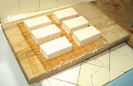
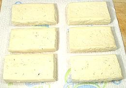

Ganmo
This is the prototype veggie burger - no attempt at this point to make
it taste like beef though. Ganmo are made in the form of patties,
similar to hamburger patties, or balls, similar to meatballs. They
are made of tofu and grated or slivered vegetables, then deep fried
in oil.
I favor patties over balls as they have more surface area and become
crisp and firm. Balls tend to be a bit mushy inside. I suggest making a
double recipe as it's hardly more effort than a single - most of the work
is in set-up and clean-up.
Recipe: There are many variations so the list of
vegetables here should be considered typical but not mandatory (though
nearly all have carrot). Many other firm vegetables could be used as
well and seasonings can be changed.
More on Tofu.
|
16
2
1
1/4
4
1
1
1
1
2
1/2
2
ar
|
oz
T
in
oz
oz
T
T
t
t
t
|
Tofu, soft
Sesame Seeds
Black Mushroom
Ginger Root
Scallions, small
Carrot
Gobo (1)
Oil
Nagaimo Yam (2)
Soy Sauce
Salt
Mirin (3)
Oil for Deep Fry
|
- Press TOFU for about 3 hours - see below. Use one block, exact
size may vary a little.
- Dry roast SESAME SEEDS to a light golden color.
- Soak BLACK MUSHROOM (a dried Shiitake, actually) in warm water
for 1/2 hour. Squeeze dry, remove stem and chop fine,
- Grate GINGER ROOT and CARROT, chop SCALLIONS fine,
mix all with Mushroom.
- Grate GOBO (if used) and immediately cover with cold water
acidulated with a little citric acid or lemon juice to prevent browning.
- Heat 1 T Oil in a small pan. Squeeze Gobo dry and add
it to the pan along with Mushroom mix. Fry stirring for about
1-1/2 minutes. Cool.
- Mash Tofu thoroughly. Mix in Vegetable mix and roasted
Sesame Seeds.
- Grate Nagaimo (oog, it's like snail snot) and mix into tofu along
with Soy Sauce, Salt and Mirin. Mix very thoroughly
so it's all even.
- Oil your hands lightly and form the mix into balls or patties. Use
about 1 heaping tablespoon for balls,
- Heat Oil to 365°F/185°C and fry ganmo a few at a time. When
they float separate them and turn them once or twice for even browning.
Drain well.
Notes
- Gobo Burdock root - use if available. This is a loooong
thin brown root. Scrape the brown skin off and grate fine. Immediately
set in water with a little citric acid or lemon juice to prevent
browning. Squeeze dry before using. For details see our
Burdock / Gobo page.
- Nagaimo Yam [Yamaimo, Mountain Yam, Glutenous Yam] This
is available in all the Asian markets around here - but you may not be
so lucky. Some say to substitute 1 T cornstarch, others say use 1 T Egg
White. The egg white is probably more effective but less vegetarian.
For more information see our
Nagaimo Yam page.
- Mirin: Real Mirin is a sweetened sake. Every
supermarket Asian section has "Mirin Style Cooking Seasoning" - not
as tasty by any means, but usable - or just sweeten sake with sugar
syrup.
- U.S. measure: t=teaspoon,
T=Tablespoon, c=cup, qt=quart, oz=ounce,
#=pound, cl=clove in=inch, ar=as required
tt=to taste
|

Start with blocks of regular Soft tofu and cut into pieces that will result
in the desired size (see below). Why not start with Firm tofu which already
has less water? Because then it wouldn't be Japanese, now would it?
Your press board should be somewhat slanted so liquid will drain
off into the sink (retired cutting boards are great for this purpose). Most
people use a dishtowel or cloth napkin instead of the bamboo mat shown in the
photo (which drains faster but leaves a pattern on one side). Each of two 19
ounce blocks of tofu has been cut into thirds and set on the mat. If you're
doing only one block set the slices near the sink end and use a spacer (about
the height of the finished blocks - I use a wine cork) between the boards at
the counter end and put the weights just an inch inboard from
directly over the tofu slices.
 Here the press is in operation with the top board on and bricks for weights.
Once the tofu was partially pressed I added a third brick across the two.
I let the tofu press for 3 hours and by then it was quite firm and no
more water was dripping out. 4 or 5 hours wouldn't hurt though.
Here the press is in operation with the top board on and bricks for weights.
Once the tofu was partially pressed I added a third brick across the two.
I let the tofu press for 3 hours and by then it was quite firm and no
more water was dripping out. 4 or 5 hours wouldn't hurt though.

Remove any surface water from the blocks with paper towels. The photo shows
fully pressed blocks. Originally they were 1.3 inches thick and weighed 6.3
ounces each. After pressing they were 0.8 inches thick and weighed 3.8 ounces
each.
The vegetables have been prepped as noted above and lightly fried. The tofu
has been mashed very thoroughly and mixed with all the other ingredients.
The finished mix has been formed into patties and balls and arranged on a
lightly oiled foil, ready to fry.
Heat plenty of oil to 365°F/185°C and fry the tofu to the degree
desired. When the balls or patties float to the surface separate them and
turn them over once or twice for even frying. Commercially in Japan two
deep fryers are used, a first at about 340°F/170°C and the final at
about 385°F/195°C. I have found trying to imitate this with a single
frier impractical.
Here 6 ganmo balls are frying in my favorite deep fry
rig. That's a 14 inch Indian kadhai charged with Olive Pomace oil and
fitted with a wire base and draining rack designed for Chinese woks. The
geometry of the kadhai is much better than a wok for deep frying and results
in less oil splatter than with any other device (they do a lot of deep frying
in India and can't afford to waste oil).
Olive Pomace oil provides the same
health profile as regular olive oil but goes to a very high temperature
(460°F/240°C), is more resistant to heat degradation than peanut oil
(1/3 as much polyunsaturated fat) and imparts no olive flavor to the food
you fry in it. For more information see our
Cooking Oils page.
Here finished patties rest on the drainage rack. A final draining on paper
towels will finish the operation. Refrigerated they'll last about a week and
they can be frozen for longer storage. Warming to room temperature and a
quick deep or pan fry will revive them.
- U.S. measure: t=teaspoon,
T=Tablespoon, c=cup, qt=quart, oz=ounce,
#=pound, cl=clove in=inch, ar=as required
tt=to taste
jmv_ganmo1 090103 var - www.clovegarden.com
©Andrew Grygus - agryg@aaxnet.com - Linking to and
non-commercial use of this page is permitted.